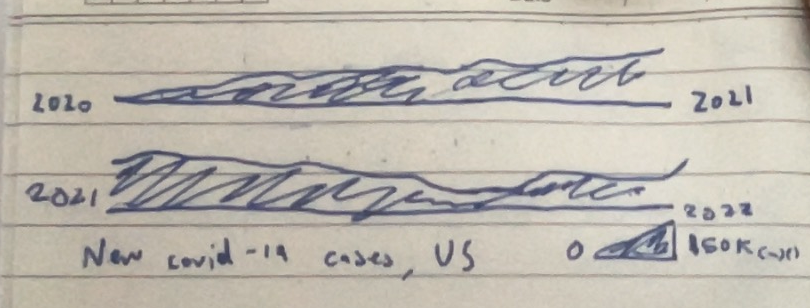
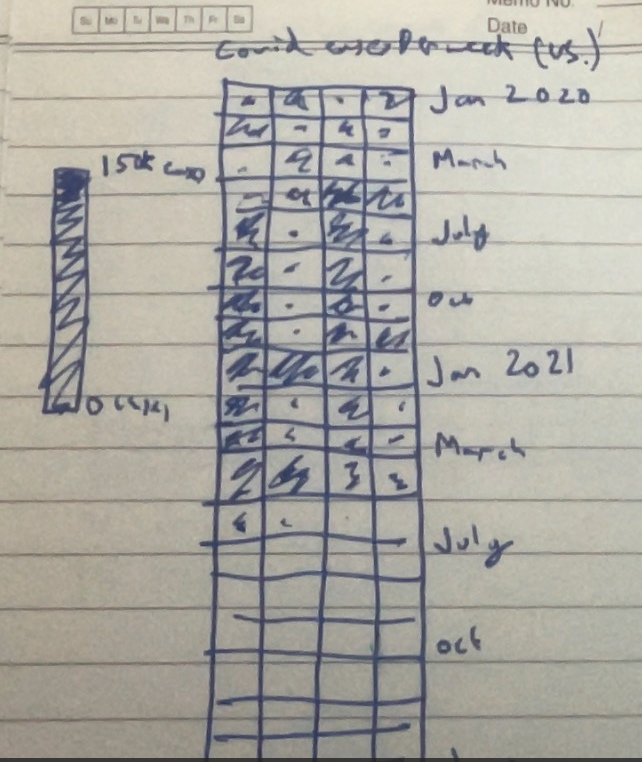
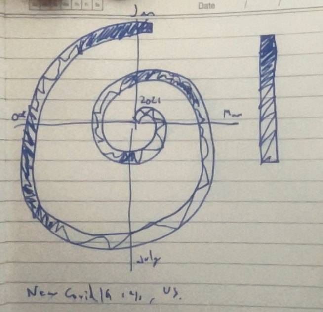
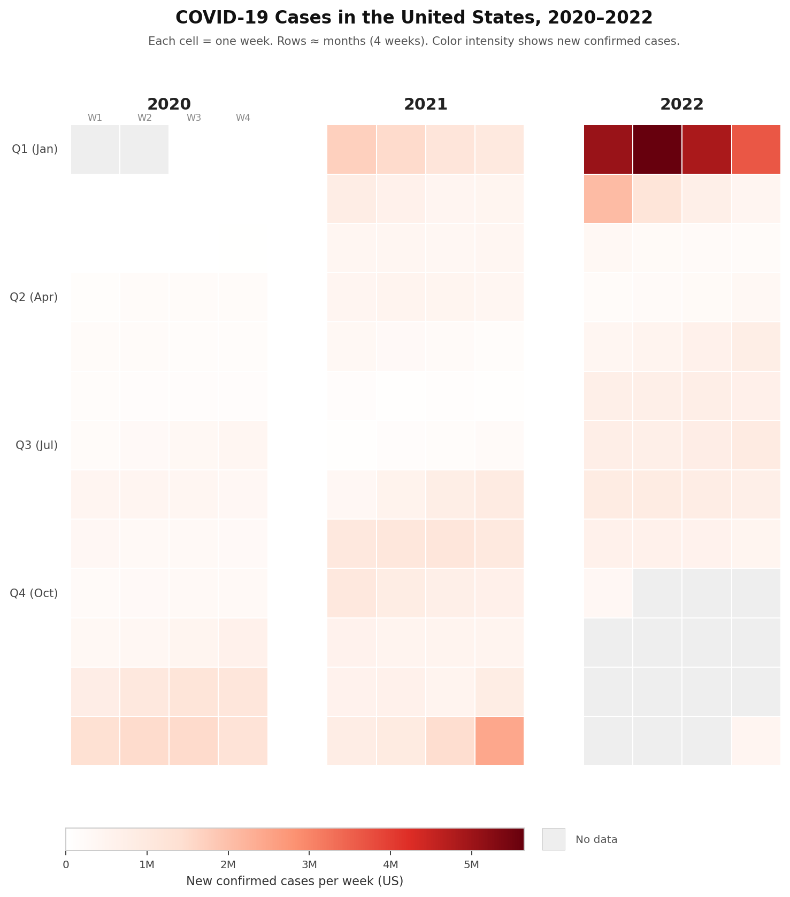

Beckett Devoe · Vis & Society 2026 · Housing Affordability
The spiral chart encodes COVID-19 case counts over time as a continuous line spiraling outward from the center, with red hue and intensity representing case volume. The takeaway message is that COVID has gotten worse over time, peaking at the end of the visualization period. The spiral design compresses the data spatially, avoiding an extremely wide linear chart, and the red color effectively conveys urgency (more COVID = worse).
The spiral design achieves its goal of compacting data that would otherwise require a very wide chart, and the red encoding appropriately evokes concern. However, the spiral introduces a significant perceptual problem: as the spiral expands outward, each ring occupies more space but represents the same time interval, making direct temporal comparison difficult. Earlier data (inner rings) are compressed into a narrow band, while recent data (outer rings) sprawl across much more visual space, distorting how we perceive trends. The height of the line (representing case count) becomes harder to judge consistently because the width of the spiral ring changes, and only four month labels (January, April, July, October) force viewers to estimate time for the unlabeled portions. Without contextual annotations, such as marking which variants dominated which peaks or when major policy shifts occurred, the underlying trends remain opaque.
To improve the design, consider using a more consistent temporal scale (such as a traditional line or area chart with responsive labeling) or, if the spiral is retained for visual interest, add event markers (e.g., "Omicron peak," "Vaccination campaign") and increase time labels to every month or quarter. This would preserve the spiral's compactness while making comparisons and interpretation clearer for the intended audience.

Rationale:

Rationale:

Rationale:

This final design is a direct iteration on Sketch 2, which introduced the grid heat map concept. The core idea from that sketch (equal-sized cells organized by week and time of year, with color encoding case intensity) is what carried forward here. The final version refines that sketch by splitting the grid into year blocks, switching to quarterly labels to solve the month drift problem I identified while sketching, and settling on square cells over the rectangular grid to keep the mark type neutral. The goal of this design is to show the severity and wave structure of COVID-19 cases in the US from 2020 to 2022, and to make it instantly clear that the Omicron wave in January 2022 was in a completely different league from everything that came before it. The overall structure is three year blocks arranged side by side, each one a 4-column by 13-row grid of square cells, where each cell is one week. This layout was chosen because it gives every time period exactly the same amount of visual space, which is the core problem with the original spiral. The three-block side-by-side framing lets viewers compare across years naturally, reading left to right like a timeline, while the vertical structure within each block lets them scan seasonally, comparing the same time of year across rows. Arranging weeks into groups of four per row makes the grouping roughly correspond to months, giving the chart an intuitive structure without having to rely on precise month labels that would drift out of alignment by December. To avoid that drift entirely, I only labeled quarters (Q1, Q2, Q3, Q4) along the left axis. Each quarter is exactly 13 weeks, so the labels line up with the grid precisely and never mislead. The year labels are large and bold at the top of each block so the viewer immediately understands the three-column structure before looking at any individual cell. The W1 through W4 column headers above the first block give a subtle reminder of what the columns mean without cluttering the other two blocks.
Each cell is a square specifically so it reads as a single unit of time and nothing more. Rectangles would imply a direction or a scale difference between axes, so squares keep the encoding clean and neutral. The color scale runs from white at zero cases to deep red at the maximum, which was about 5.6 million cases in early January 2022. White was chosen as the baseline because it reads as absence or near-absence, and the gradient into red is a direct visual metaphor for danger and worsening conditions, which maps cleanly onto how the audience already thinks about COVID. The color choice also means that the Omicron peak in Q1 2022 is immediately the most visually dominant feature of the entire chart, which is the intended message. This encoding also directly solves the main problem I raised in the critique of the spiral: in the spiral, spatial height encodes case counts but the ring width changes as the spiral expands, which distorts how tall any given spike looks depending on where in the spiral it falls. Color intensity has no spatial dependency, so a cell in 2020 and a cell in 2022 are visually comparable in a way that the spiral simply cannot achieve. Grey cells mark weeks with no data, and a "No data" swatch is included next to the colorbar so viewers are not confused about whether grey means zero cases or missing data. The colorbar itself uses human-readable labels (1M, 2M, etc.) instead of scientific notation to keep it accessible. The title is plain and descriptive, naming the subject, the country, and the time range so the chart is interpretable without reading any surrounding text. Things this design necessarily hides include day-to-day variation (smoothed out by weekly aggregation), geographic differences across states, demographic breakdowns, and any annotation of policy events or variant names. The tradeoff is that this chart is less emotionally dramatic than the spiral but far more trustworthy for comparison. A viewer can look at any two cells and know their sizes mean the same thing.